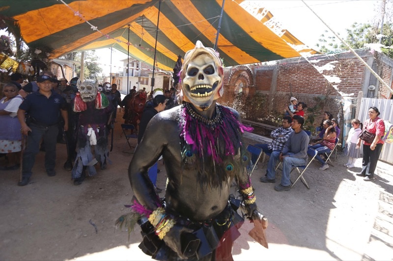
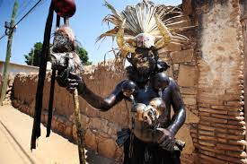
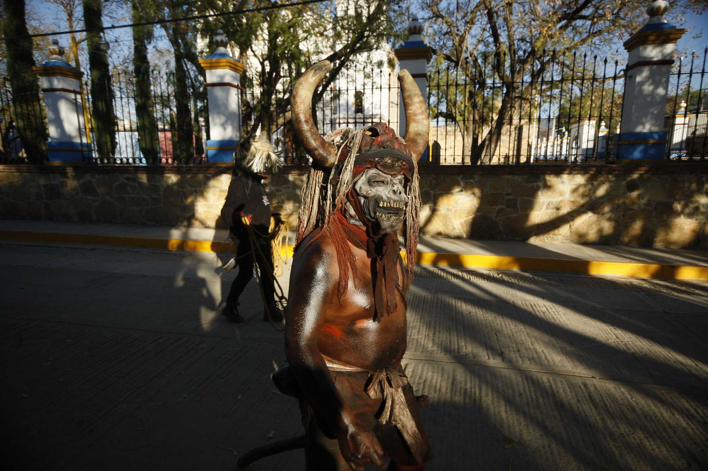

Carnaval
La comunidad es ya conocida por el carnaval que cada año se lleva a cabo, en el cual el principal atractivo es ver desfilar por sus calles a hombres y mujeres disfrazados con máscaras de madera que ellos mismos tallan y el cuerpo pintado, para dar este efecto algunos ocupan aceite quemado algunos otros pintura vinílica y así se preparan para salir por las principales calles del poblado, espantando a propios y extraños. El carnaval es una tradición ancestral, no se tiene registro de cuando inició pero a través de los años se ha realizado puntualmente un día antes del miércoles de ceniza, celebración con que comienza la cuaresma. Esta fiesta propia de la región la llevan a cabo de una manera profano-religiosa, emana de la Semana Santa, donde antes comenzar los actos solemnes se rinde tributo a los pecados. El carnaval es un acto entre la vida social, cultural, histórica y artística. Esta tradición ha empezado a causar inquietud entre las nuevas generaciones de la comunidad ya que de pronto, en medio de los adultos que gritan y azotan cadenas salen algunos pequeños pintados del cuerpo y endiablados se unen al recorrido. El recorrido finaliza en la casa del alcalde donde se realiza una boda, haciendo referencia a la relación entre autoridades y el pueblo, en donde se imitan disfrazan y burlan de los representantes municipales, también se premia a los mejores disfraces del Carnaval.


